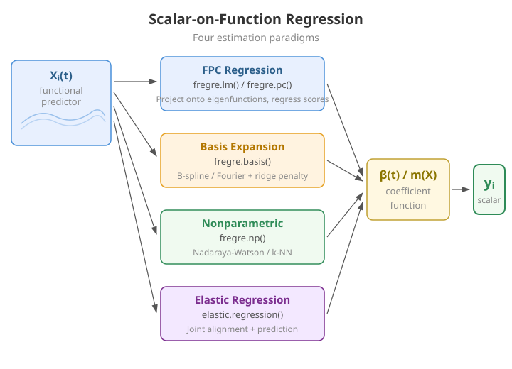
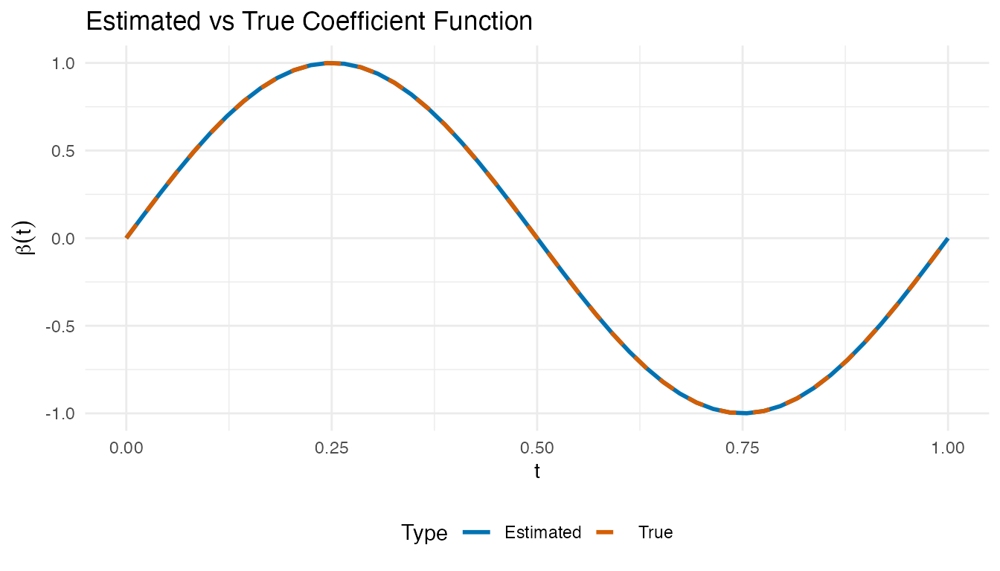
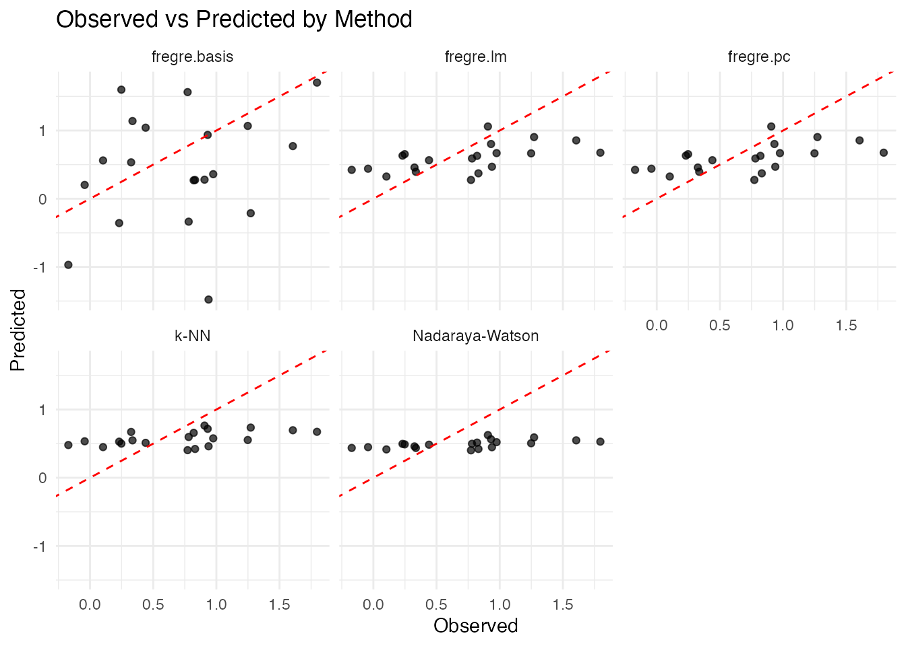
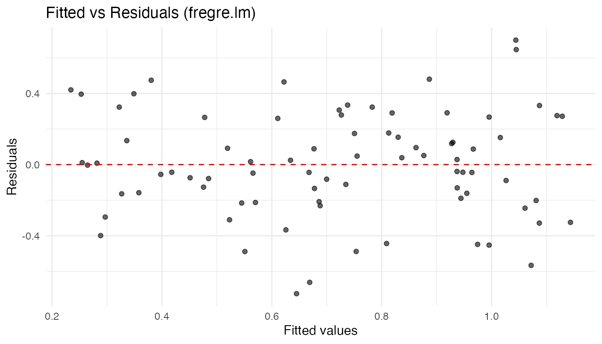
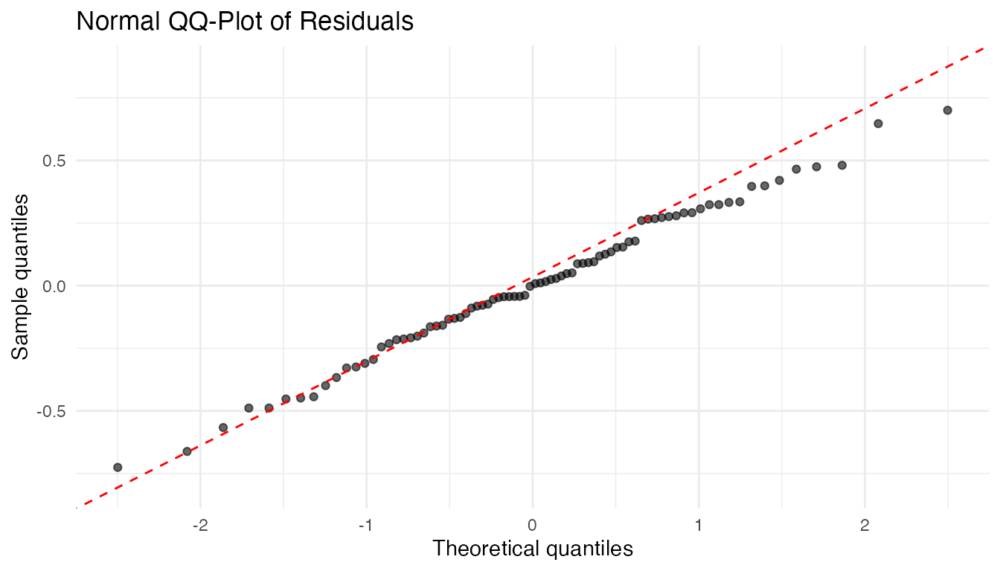
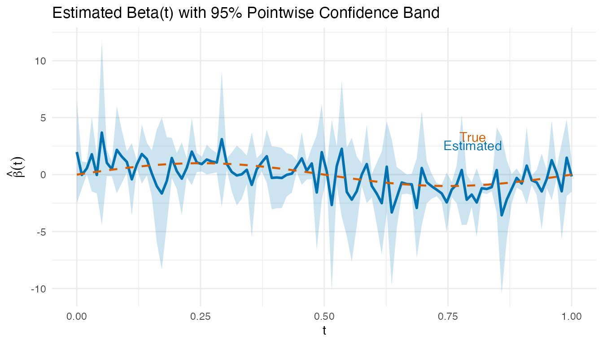

Scalar-on-Function Regression
Source:vignettes/articles/scalar-on-function.Rmd
scalar-on-function.RmdIntroduction
Scalar-on-function regression predicts a scalar response from a functional predictor . This is the most common regression setting in functional data analysis: you have curves and want to predict a number.

Which Method Should I Use?
| Method | Function | Key parameter | Best when |
|---|---|---|---|
| FPC Regression | fregre.lm() |
(# components) | Default choice; full diagnostics/explainability |
| PC Regression | fregre.pc() |
(# components) | Pure R alternative to fregre.lm()
|
| Basis Expansion | fregre.basis() |
(penalty) | Smooth , interpretable coefficient |
| Nonparametric | fregre.np() |
(bandwidth) or | Nonlinear relationships |
| Elastic | elastic.regression() |
, warps | Phase-variable curves |
Quick decision rule:
- Start with
fregre.lm()— it has the richest downstream support (explainability, diagnostics, uncertainty quantification). - Test linearity with
flm.test(). If rejected, tryfregre.np(). - If curves are misaligned, consider
elastic.regression()(seevignette("articles/elastic-regression")).
The Functional Linear Model
The foundational model in scalar-on-function regression is:
where:
- is the scalar response for observation
- is the functional predictor observed over domain
- is the intercept
- is the coefficient function (unknown, to be estimated)
- are i.i.d. errors
The coefficient function describes how the predictor curve at time influences the response. A positive means higher predictor values at time increase .
The Estimation Challenge
Unlike classical regression where we estimate a finite number of parameters, here we must estimate an entire function . This is an ill-posed inverse problem:
Ill-posedness. The integral operator is compact, so infinitely many solutions may exist and the least-squares estimate is wildly unstable.
Curse of dimensionality. Discretizing at grid points gives parameters from observations. When , the model is massively overparameterized.
fdars provides four approaches to regularize this problem, each described in the sections below.
FPC Regression (fregre.lm)
fregre.lm() estimates
by projecting onto functional principal components
(FPCs). This is the recommended default: it has the Rust backend,
supports standard errors and GCV, and is the only model with full explainability, diagnostics, and uncertainty quantification
support.
Mathematical Formulation
Let be the eigenfunctions of the covariance operator of , and let be the FPC scores. Expanding and substituting gives:
This reduces the functional regression to an ordinary multiple regression on FPC scores. The coefficient function is recovered as:
The number of components controls the bias–variance trade-off: too few components oversimplify ; too many introduce noise.
Standard Errors and GCV
With the FPC scores as predictors, standard OLS inference applies. The variance of is where is the score matrix. Generalized cross-validation provides a computationally efficient alternative to leave-one-out CV:
where are the diagonal elements of the hat matrix .
Basic Usage
set.seed(42)
n_lm <- 80
m_lm <- 100
t_lm <- seq(0, 1, length.out = m_lm)
# Simulate functional predictor
X_lm <- matrix(0, n_lm, m_lm)
for (i in 1:n_lm) {
X_lm[i, ] <- sin(2 * pi * t_lm) * runif(1, 0.5, 2) +
cos(4 * pi * t_lm) * rnorm(1, sd = 0.3) +
rnorm(m_lm, sd = 0.1)
}
beta_true_lm <- sin(2 * pi * t_lm)
y_lm <- X_lm %*% beta_true_lm / m_lm + rnorm(n_lm, sd = 0.3)
fd_lm <- fdata(X_lm, argvals = t_lm)
fit_lm <- fregre.lm(fd_lm, y_lm, ncomp = 3)
print(fit_lm)
#> Functional Linear Model (FPC-based)
#> ====================================
#> Number of observations: 80
#> Number of FPC components: 3
#> R-squared: 0.4371
#> Adjusted R-squared: 0.4149
#> GCV: 0.0968Cross-Validation for Component Selection
fregre.lm.cv() selects the optimal number of FPC
components via k-fold cross-validation.
cv_lm <- fregre.lm.cv(fd_lm, y_lm, k.range = 1:8, nfold = 10)
cat("Optimal ncomp:", cv_lm$optimal.k, "\n")
#> Optimal ncomp: 7
cat("CV errors:", round(cv_lm$cv.errors, 4), "\n")
#> CV errors: 0.0972 0.0964 0.0967 0.0986 0.0987 0.0966 0.0954 0.0967PC Regression (fregre.pc)
fregre.pc() uses the same FPC-based approach as
fregre.lm() but is implemented in pure R. It is
mathematically equivalent — choose fregre.lm() when you
need the downstream explainability/diagnostics ecosystem; choose
fregre.pc() if you prefer a pure-R solution.
Mathematical Formulation
Using FPCA, each curve is represented as:
Truncating at components and substituting into the functional linear model:
The coefficient function is reconstructed as:
Cross-Validation for Component Selection
# Find optimal number of components
cv_pc <- fregre.pc.cv(fd, y, ncomp.range = 1:10, seed = 42)
cat("Optimal number of components:", cv_pc$optimal.ncomp, "\n")
#> Optimal number of components: 1
cat("CV error by component:\n")
#> CV error by component:
print(round(cv_pc$cv.errors, 4))
#> 1 2 3 4 5 6 7 8 9 10
#> 0.2662 0.2670 0.2724 0.2722 0.2740 0.2688 0.2778 0.2714 0.2747 0.2722Prediction
# Split data
train_idx <- 1:80
test_idx <- 81:100
fd_train <- fd[train_idx, ]
fd_test <- fd[test_idx, ]
y_train <- y[train_idx]
y_test <- y[test_idx]
# Fit on training data
fit_train <- fregre.pc(fd_train, y_train, ncomp = 3)
# Predict on test data
y_pred <- predict(fit_train, fd_test)
# Evaluate
cat("Test RMSE:", round(pred.RMSE(y_test, y_pred), 3), "\n")
#> Test RMSE: 0.457
cat("Test R2:", round(pred.R2(y_test, y_pred), 3), "\n")
#> Test R2: 0.219Basis Expansion Regression (fregre.basis)
Basis expansion regression represents both the functional predictor and the coefficient function using a finite set of basis functions, providing a different regularization strategy.
Mathematical Formulation
Let be a set of basis functions (e.g., B-splines or Fourier). We expand:
Substituting into the functional linear model:
where is the inner product matrix with entries .
Ridge Regularization
To prevent overfitting, we add a roughness penalty:
The penalty discourages rapid oscillations.
Basis Choice
- B-splines: Flexible, local support, good for non-periodic data
- Fourier: Natural for periodic data, global support
Basic Usage
# Fit basis regression with 15 B-spline basis functions
fit_basis <- fregre.basis(fd, y, nbasis = 15, type = "bspline")
print(fit_basis)
#> Functional regression model
#> Number of observations: 100
#> R-squared: 0.5805754Regularization
# Higher lambda = more regularization
fit_basis_reg <- fregre.basis(fd, y, nbasis = 15, type = "bspline", lambda = 1)Cross-Validation for Lambda
# Find optimal lambda
cv_basis <- fregre.basis.cv(fd, y, nbasis = 15, type = "bspline",
lambda.range = c(0.001, 0.01, 0.1, 1, 10))
cat("Optimal lambda:", cv_basis$optimal.lambda, "\n")
#> Optimal lambda: 10
cat("CV error by lambda:\n")
#> CV error by lambda:
print(round(cv_basis$cv.errors, 4))
#> 0.001 0.01 0.1 1 10
#> 0.6124 0.5766 0.4332 0.3047 0.2794Fourier Basis
For periodic data, use Fourier basis:
fit_fourier <- fregre.basis(fd, y, nbasis = 11, type = "fourier")Visualizing the Estimated Beta(t)
The coefficient function reveals which time points drive the response. Positive regions mean higher predictor values there increase ; negative regions decrease it.
# Reconstruct beta_hat(t) from basis regression coefficients
beta_hat <- fit_basis$beta.est
# Compare estimated vs true beta(t)
df_beta <- data.frame(
t = rep(t_grid, 2),
beta = c(beta_hat, beta_true),
Type = rep(c("Estimated", "True"), each = m)
)
ggplot(df_beta, aes(x = t, y = beta, color = Type, linetype = Type)) +
geom_line(linewidth = 1) +
scale_color_manual(values = c("Estimated" = "#0072B2", "True" = "#D55E00")) +
scale_linetype_manual(values = c("Estimated" = "solid", "True" = "dashed")) +
labs(title = "Estimated vs True Coefficient Function",
x = "t", y = expression(beta(t))) +
theme(legend.position = "bottom")
Nonparametric Regression (fregre.np)
Nonparametric functional regression makes no parametric assumptions about the relationship between and . Instead, it estimates directly using local averaging techniques.
The General Framework
Given a new functional observation , the predicted response is:
where are weights that depend on the “distance” between and the training curves .
Nadaraya-Watson Estimator
The Nadaraya-Watson (kernel regression) estimator uses:
where is a kernel function and is the bandwidth.
| Kernel | Formula |
|---|---|
| Gaussian | |
| Epanechnikov | |
| Uniform |
k-Nearest Neighbors
The k-NN estimator averages the responses of the closest curves:
Two variants are available:
-
Global k-NN (
kNN.gCV): single selected by leave-one-out CV -
Local k-NN (
kNN.lCV): adaptive that may vary per prediction point
Bandwidth Selection
# Cross-validation for bandwidth
cv_np <- fregre.np.cv(fd, y, h.range = seq(0.1, 1, by = 0.1))
cat("Optimal bandwidth:", cv_np$optimal.h, "\n")
#> Optimal bandwidth: 0.2Different Kernels
# Epanechnikov kernel
fit_epa <- fregre.np(fd, y, Ker = "epa")
# Available kernels: "norm", "epa", "tri", "quar", "cos", "unif"Multiple Functional Predictors
When the response depends on more than one functional predictor,
fregre.np.multi() extends nonparametric regression to
handle a list of functional predictors.
# Simulate a second functional predictor
set.seed(123)
X2 <- matrix(0, n, m)
for (i in 1:n) {
X2[i, ] <- cos(2 * pi * t_grid) * rnorm(1, 0, 0.5) +
rnorm(m, sd = 0.1)
}
fd2 <- fdata(X2, argvals = t_grid)
# Response depends on both predictors
beta_true2 <- cos(4 * pi * t_grid)
y_multi <- numeric(n)
for (i in 1:n) {
y_multi[i] <- sum(beta_true * X[i, ]) / m +
0.5 * sum(beta_true2 * X2[i, ]) / m +
rnorm(1, sd = 0.3)
}
# Fit with multiple functional predictors
fit_multi <- fregre.np.multi(list(fd, fd2), y_multi)
print(fit_multi)
#> Nonparametric functional regression with multiple predictors
#> =============================================================
#> Number of observations: 100
#> Number of functional predictors: 2
#> Smoother type: S.NW
#> Weights: 0.5, 0.5
#> Bandwidth: 0.2809
#> R-squared: 0.0632Mixed Functional and Scalar Predictors
Real datasets often include both functional and scalar covariates.
fregre.np.mixed() handles this by selecting separate
bandwidths for the functional and scalar parts.
# Add a scalar covariate
z <- rnorm(n)
y_mixed <- y + 0.8 * z # scalar effect added
# Fit with functional + scalar predictors
fit_mixed <- fregre.np.mixed(fd, y_mixed, scalar.covariates = z)
print(fit_mixed)
#> Nonparametric functional regression model
#> Number of observations: 100
#> Smoother type:
#> R-squared: 0.7061Testing the Linear Model Assumption
Before choosing between linear and nonparametric methods,
flm.test() tests whether the functional linear model is
adequate. If the null hypothesis (linear relationship) is not rejected,
PC and basis regression are justified; otherwise nonparametric methods
may be preferable.
# Test H0: the relationship between X(t) and Y is linear
flm_result <- flm.test(fd_train, y_train, B = 200)
print(flm_result)
#>
#> Projected Cramer-von Mises test for FLM
#>
#> data:
#> = 2073.2, p-value = 0.13A large p-value supports the linear model; a small p-value () suggests the true relationship is nonlinear and parametric methods may be misspecified.
Comparing Methods
# Fit all methods on training data
fit1 <- fregre.pc(fd_train, y_train, ncomp = 3)
fit2 <- fregre.basis(fd_train, y_train, nbasis = 15)
fit3 <- fregre.np(fd_train, y_train, type.S = "S.NW")
fit4 <- fregre.np(fd_train, y_train, type.S = "kNN.gCV")
fit5 <- fregre.lm(fd_train, y_train, ncomp = 3)
# Predict on test data
pred1 <- predict(fit1, fd_test)
pred2 <- predict(fit2, fd_test)
pred3 <- predict(fit3, fd_test)
pred4 <- predict(fit4, fd_test)
pred5 <- predict(fit5, fd_test)
# Compare performance
results <- data.frame(
Method = c("fregre.pc", "fregre.basis",
"Nadaraya-Watson", "k-NN", "fregre.lm (Rust)"),
RMSE = round(c(pred.RMSE(y_test, pred1),
pred.RMSE(y_test, pred2),
pred.RMSE(y_test, pred3),
pred.RMSE(y_test, pred4),
pred.RMSE(y_test, pred5)), 4),
R2 = round(c(pred.R2(y_test, pred1),
pred.R2(y_test, pred2),
pred.R2(y_test, pred3),
pred.R2(y_test, pred4),
pred.R2(y_test, pred5)), 4),
MAE = round(c(pred.MAE(y_test, pred1),
pred.MAE(y_test, pred2),
pred.MAE(y_test, pred3),
pred.MAE(y_test, pred4),
pred.MAE(y_test, pred5)), 4)
)
knitr::kable(results, caption = "Hold-out test set performance")| Method | RMSE | R2 | MAE |
|---|---|---|---|
| fregre.pc | 0.4570 | 0.2188 | 0.3820 |
| fregre.basis | 0.8990 | -2.0226 | 0.7162 |
| Nadaraya-Watson | 0.5359 | -0.0742 | 0.4453 |
| k-NN | 0.4935 | 0.0891 | 0.4186 |
| fregre.lm (Rust) | 0.4570 | 0.2188 | 0.3820 |
Visualizing Predictions
df_pred <- data.frame(
Observed = rep(y_test, 5),
Predicted = c(pred1, pred2, pred3, pred4, pred5),
Method = rep(c("fregre.pc", "fregre.basis",
"Nadaraya-Watson", "k-NN", "fregre.lm"),
each = length(y_test))
)
ggplot(df_pred, aes(x = Observed, y = Predicted)) +
geom_point(alpha = 0.7) +
geom_abline(intercept = 0, slope = 1, linetype = "dashed", color = "red") +
facet_wrap(~ Method, nrow = 2) +
labs(title = "Observed vs Predicted by Method",
x = "Observed", y = "Predicted")
Model Diagnostics
After fitting a functional linear model, standard regression diagnostics help check whether the model assumptions hold.
Residual Plots
df_diag <- data.frame(
Fitted = fit_lm$fitted.values,
Residuals = fit_lm$residuals
)
ggplot(df_diag, aes(x = Fitted, y = Residuals)) +
geom_point(alpha = 0.6) +
geom_hline(yintercept = 0, linetype = "dashed", color = "red") +
labs(title = "Fitted vs Residuals (fregre.lm)",
x = "Fitted values", y = "Residuals")
A random scatter around zero supports the linearity and constant-variance assumptions. Fan-shaped or curved patterns suggest heteroscedasticity or nonlinearity.
QQ-Plot of Residuals
ggplot(df_diag, aes(sample = Residuals)) +
stat_qq(alpha = 0.6) +
stat_qq_line(color = "red", linetype = "dashed") +
labs(title = "Normal QQ-Plot of Residuals",
x = "Theoretical quantiles", y = "Sample quantiles")
Visualizing Beta(t) with Confidence Bands
# fregre.lm stores beta(t) as an fdata object and SEs from the FPC regression
coefs <- fit_lm$coefficients[-1] # exclude intercept
loadings <- fit_lm$.fpca_rotation # m x K matrix of FPC loadings
beta_hat_lm <- as.numeric(loadings %*% coefs)
# Approximate pointwise SE via delta method using FPC score regression SEs
se_coefs <- fit_lm$std.errors[-1] # exclude intercept SE
beta_se <- sqrt(as.numeric((loadings^2) %*% (se_coefs^2)))
df_beta_ci <- data.frame(
t = t_lm,
beta = beta_hat_lm,
lower = beta_hat_lm - 1.96 * beta_se,
upper = beta_hat_lm + 1.96 * beta_se,
true_beta = beta_true_lm
)
ggplot(df_beta_ci, aes(x = t)) +
geom_ribbon(aes(ymin = lower, ymax = upper), fill = "#0072B2", alpha = 0.2) +
geom_line(aes(y = beta), color = "#0072B2", linewidth = 1) +
geom_line(aes(y = true_beta), color = "#D55E00", linetype = "dashed",
linewidth = 0.8) +
labs(title = "Estimated Beta(t) with 95% Pointwise Confidence Band",
x = "t", y = expression(hat(beta)(t))) +
annotate("text", x = 0.8, y = max(beta_hat_lm) * 0.9,
label = "True", color = "#D55E00") +
annotate("text", x = 0.8, y = max(beta_hat_lm) * 0.7,
label = "Estimated", color = "#0072B2")
Regions where the confidence band excludes zero indicate time points where the predictor significantly influences the response.
For comprehensive diagnostics (influence, Cook’s distance, DFBETAS,
etc.), see vignette("articles/regression-diagnostics").
Prediction Metrics
Model performance is evaluated using standard regression metrics:
| Metric | Formula | Interpretation |
|---|---|---|
| MAE | Average absolute error | |
| MSE | Average squared error | |
| RMSE | Error in original units | |
| Proportion of variance explained |
cat("MAE:", pred.MAE(y_test, pred1), "\n")
#> MAE: 0.3819577
cat("MSE:", pred.MSE(y_test, pred1), "\n")
#> MSE: 0.2088714
cat("RMSE:", pred.RMSE(y_test, pred1), "\n")
#> RMSE: 0.4570245
cat("R2:", pred.R2(y_test, pred1), "\n")
#> R2: 0.2188439All methods support leave-one-out cross-validation (LOOCV) for parameter selection:
This is implemented efficiently using the “hat matrix trick” for linear methods.
Practical Workflow
A recommended workflow for scalar-on-function regression:
-
Start simple: fit
fregre.lm.cv()to find the optimal number of FPC components via cross-validation. -
Check linearity: run
flm.test()on the training data. A significant p-value suggests nonlinearity. -
If linear holds: compare
fregre.lm(),fregre.pc(), andfregre.basis()— all estimate the functional linear model with different regularization strategies. -
If linearity is rejected: try
fregre.np()with bandwidth cross-validation (fregre.np.cv()). -
Evaluate: hold out a test set and compare methods
with
pred.RMSE(),pred.R2(), andpred.MAE(). - Diagnose: check residual plots and the estimated for interpretability.
set.seed(42)
tr <- sample(n, 70)
te <- setdiff(1:n, tr)
fd_tr <- fd[tr, ]
fd_te <- fd[te, ]
y_tr <- y[tr]
y_te <- y[te]
# Step 1: CV for component selection
cv <- fregre.lm.cv(fd_tr, y_tr, k.range = 1:6, nfold = 5)
# Step 2: Test linearity
linearity <- flm.test(fd_tr, y_tr, B = 200)
cat("FLM test p-value:", linearity$p.value, "\n")
#> FLM test p-value: 0.65
# Step 3-4: Fit best linear and nonparametric
fit_best_lm <- fregre.lm(fd_tr, y_tr, ncomp = cv$optimal.k)
fit_best_np <- fregre.np(fd_tr, y_tr, type.S = "kNN.gCV")
# Step 5: Evaluate
pred_lm_wf <- predict(fit_best_lm, fd_te)
pred_np_wf <- predict(fit_best_np, fd_te)
cat("Linear RMSE:", round(pred.RMSE(y_te, pred_lm_wf), 4),
"| R2:", round(pred.R2(y_te, pred_lm_wf), 4), "\n")
#> Linear RMSE: 0.4575 | R2: -3e-04
cat("Nonpar RMSE:", round(pred.RMSE(y_te, pred_np_wf), 4),
"| R2:", round(pred.R2(y_te, pred_np_wf), 4), "\n")
#> Nonpar RMSE: 0.5028 | R2: -0.2086Method Selection Guide
FPC Regression (fregre.lm /
fregre.pc):
- Best when the functional predictor has clear dominant modes of variation
- Computationally efficient for large datasets
- Interpretable: each PC represents a pattern in the data
-
fregre.lm()is the only model with full explainability support
Basis Expansion Regression
(fregre.basis):
- Best when you believe is smooth
- Use B-splines for local features, Fourier for periodic patterns
- The penalty parameter provides automatic regularization
- Good when you want to visualize and interpret
Nonparametric Regression
(fregre.np):
- Best when the relationship between and may be nonlinear
- Makes minimal assumptions about the data-generating process
- Computationally more expensive (requires distance calculations)
- May require larger sample sizes for stable estimation
See Also
-
vignette("articles/function-on-scalar")— when the response is a curve -
vignette("articles/elastic-regression")— alignment-aware regression -
vignette("articles/functional-classification")— classifying curves (includingfunctional.logistic()) -
vignette("articles/explainability")— interpretingfregre.lm()models -
vignette("articles/regression-diagnostics")— influence, Cook’s distance, VIF -
vignette("articles/uncertainty-quantification")— prediction intervals -
vignette("articles/cross-validation")— cross-validation framework -
vignette("fpca", package = "fdars")— functional principal component analysis -
vignette("basis-representation", package = "fdars")— basis function representations
References
Foundational texts:
- Ramsay, J.O. and Silverman, B.W. (2005). Functional Data Analysis, 2nd ed. Springer.
- Ferraty, F. and Vieu, P. (2006). Nonparametric Functional Data Analysis: Theory and Practice. Springer.
- Horváth, L. and Kokoszka, P. (2012). Inference for Functional Data with Applications. Springer.
Key methodological papers:
- Cardot, H., Ferraty, F., and Sarda, P. (1999). Functional Linear Model. Statistics & Probability Letters, 45(1), 11–22.
- Reiss, P.T. and Ogden, R.T. (2007). Functional Principal Component Regression and Functional Partial Least Squares. Journal of the American Statistical Association, 102(479), 984–996.
- Goldsmith, J., Bobb, J., Crainiceanu, C., Caffo, B., and Reich, D. (2011). Penalized Functional Regression. Journal of Computational and Graphical Statistics, 20(4), 830–851.
- Ferraty, F., Laksaci, A., and Vieu, P. (2006). Estimating Some Characteristics of the Conditional Distribution in Nonparametric Functional Models. Statistical Inference for Stochastic Processes, 9, 47–76.